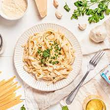
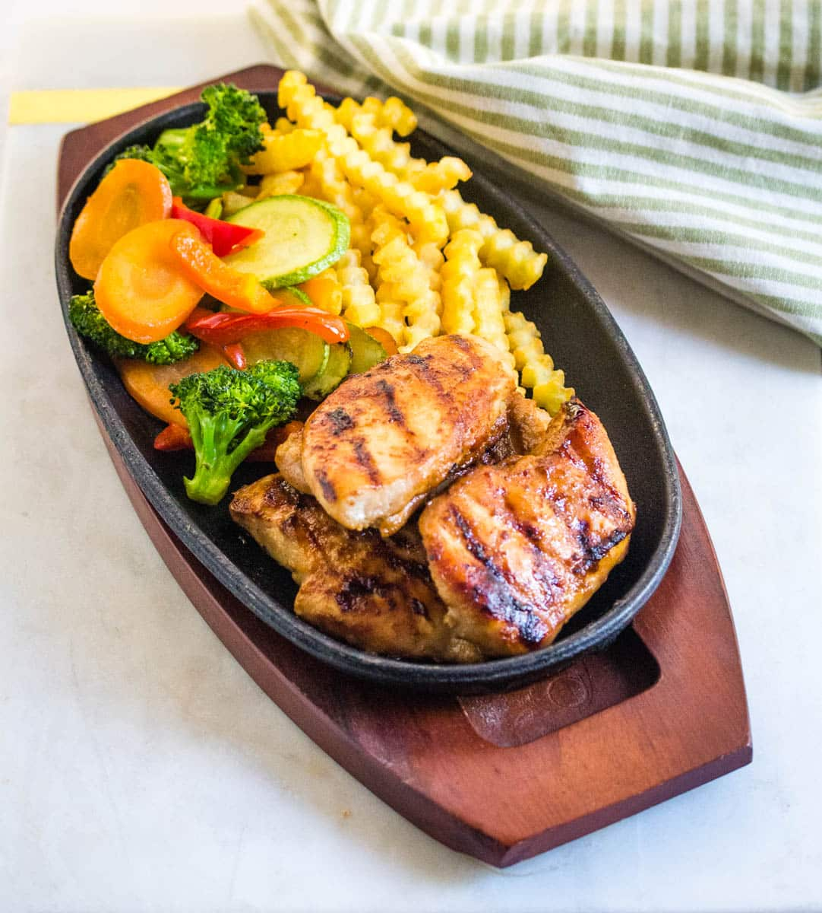
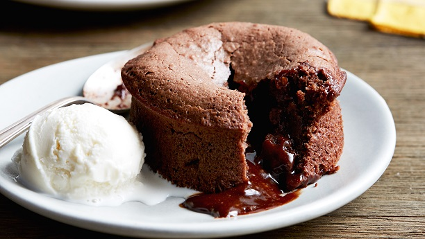

| Meal Type | Recipe | Image | Ingredients | Instructions |
|---|---|---|---|---|
| Breakfast | Cheese Omellete |
|
1. Crack the eggs into a bowl, add salt and pepper, and beat lightly. 2. Heat butter in a non-stick skillet over medium heat. 3. Pour the beaten eggs into the skillet and let them cook, stirring occasionally, until they're set but still moist. 4. Add cheese and wait unitl it melts and then serve hot. |
|
| Lunch | Alferodo Pasta |  |
|
1. Cook the fettuccine pasta according to package instructions until al dente. Drain and set aside. 2. In a large skillet, melt the butter over medium heat. Add minced garlic and cook until fragrant, about 1 minute. 3. Pour in the heavy cream and bring to a simmer. Let it cook for 2-3 minutes, stirring occasionally. 4. Gradually add the grated Parmesan cheese, stirring constantly until the sauce is smooth and thickened. 5. Season with salt and pepper to taste. 6. Add the cooked fettuccine to the skillet with the Alfredo sauce. Toss well to coat the pasta evenly. 7. Serve hot, garnished with chopped parsley if desired. |
| Dinner | Chicken Steak |  |
|
1. Preheat your grill or skillet to medium-high heat. 2. Season the chicken breasts generously with salt and pepper on both sides. 3. Drizzle olive oil over the chicken breasts and rub to coat evenly. 4. Place the chicken breasts on the grill or skillet and cook for about 6-8 minutes on each side, or until fully cooked through and no longer pink in the center. Cooking time may vary depending on the thickness of the chicken breasts. 5. While the chicken is cooking, heat the butter in a small skillet over medium heat. Add minced garlic and dried thyme, and cook for 1-2 minutes until the garlic is fragrant. 6. Once the chicken is cooked, transfer it to a serving plate and pour the garlic thyme butter over the top. |
| Dessert | Molten Lava Chocalte Cake |  |
|
1. Preheat oven to 425°F (220°C). Grease and flour ramekins. 2. Microwave chocolate and butter until melted and smooth. 3. Gradually whisk melted chocolate into egg mixture. 4. Fold in flour and salt until just combined. 5. Divide batter among ramekins. 6. Bake for 12-14 minutes. 7. Cool in ramekins for 1-2 minutes. 8. Loosen edges, invert onto plates. 9. Serve with ice cream and berries. |